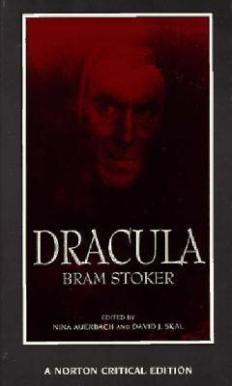

Books
Horrors
Horrors

Jack Torrance's new job at the Overlook Hotel is the perfect chance for a fresh start. As the off-season caretaker at the atmospheric old hotel, he'll have plenty of time to spend reconnecting with his family and working on his writing. But as the harsh winter weather sets in, the idyllic location feels ever more remote...and more sinister. And the only one to notice the strange and terrible forces gathering around the Overlook is Danny Torrance, a uniquely gifted five-year-old. ©1977 Stephen King;

A rich selection of background and source materials is provided in three areas: Contexts includes probable inspirations for Dracula in the earlier works of James Malcolm Rymer and Emily Gerard. Also included are a discussion of Stoker's working notes for the novel and "Dracula's Guest," the original opening chapter to Dracula. Reviews and Reactions reprints five early reviews of the novel. "Dramatic and Film Variations" focuses on theater and film adaptations of Dracula, two indications of the novel's unwavering appeal. David J. Skal, Gregory A. Waller, and Nina Auerbach offer their varied perspectives. Checklists of both dramatic and film adaptations are included. Criticism collects seven theoretical interpretations of Dracula by Phyllis A. Roth, Carol A. Senf, Franco Moretti, Christopher Craft, Bram Dijsktra, Stephen D. Arata, and Talia Schaffer.